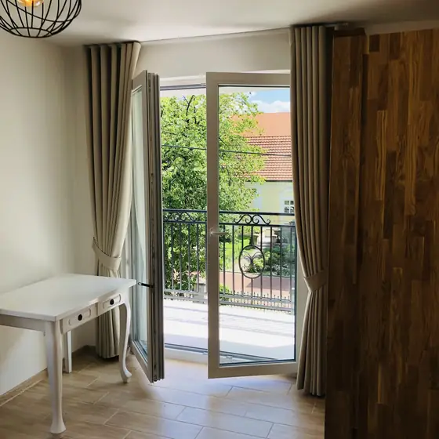
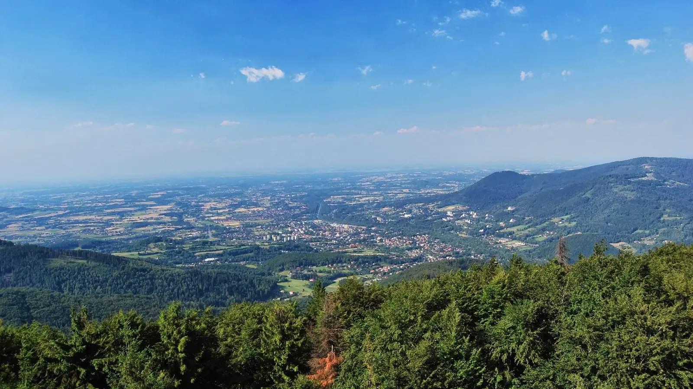
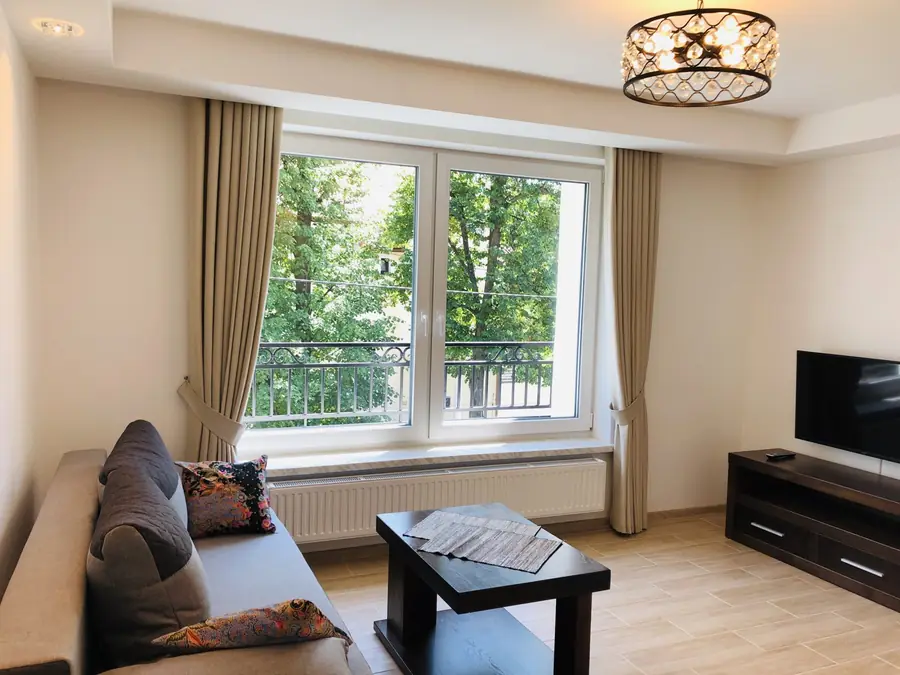
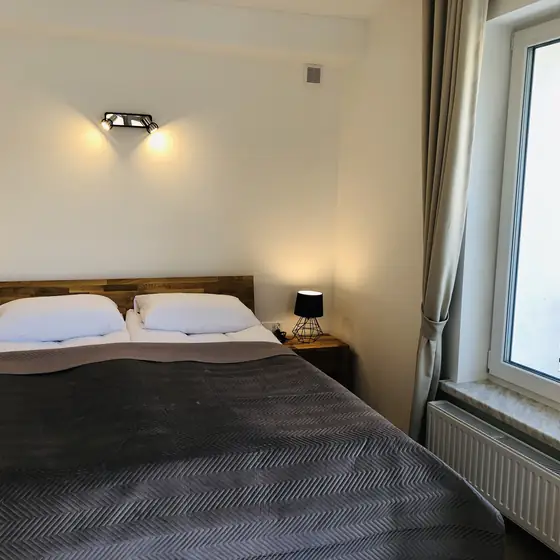
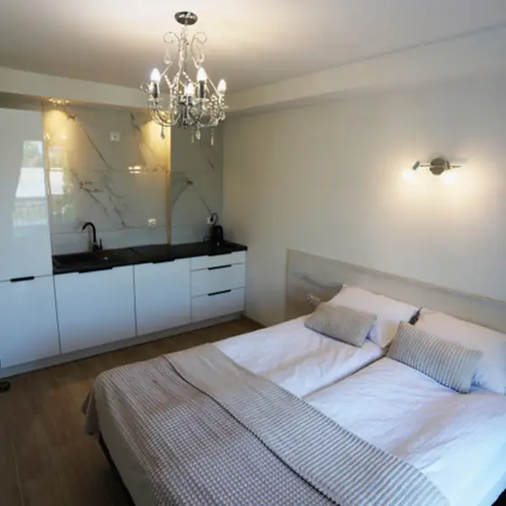
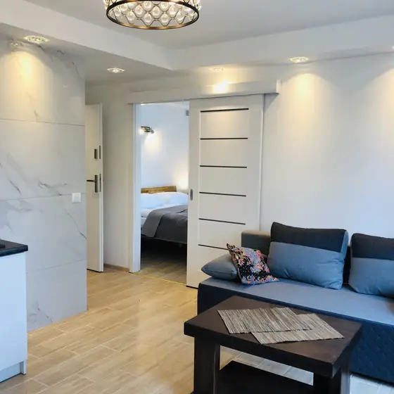

Apartament 1-osobowy
Pojedyncze łóżko, szafka i lampka nocna, szafa, stolik oraz fotele.

Kilka kroków od rynku, restauracji, szlaków i ścieżek rowerowych. Przestronne apartamenty z kuchnią i łazienką, parking na posesji.
Zapytaj o wolny terminul. Marii Konopnickiej 2, 43-450 Ustroń
Apartamenty Biała Perła stoją w centrum Ustronia. Do rynku, sklepów i restauracji idzie się kilka minut, a szlaki turystyczne i ścieżki rowerowe zaczynają się tuż obok. To wygodna baza dla turystów, wczasowiczów i kuracjuszy, którzy chcą poznać Beskid Śląski albo po prostu odpocząć.

Nowocześnie urządzone wnętrza z kuchnią, łazienką i telewizorem z płaskim ekranem. Chętnie przygotujemy ofertę dopasowaną do terminu i liczby osób.

Pojedyncze łóżko, szafka i lampka nocna, szafa, stolik oraz fotele.

Łóżko małżeńskie, szafki i lampki nocne, szafa, stolik oraz fotele.

Łóżko małżeńskie i jedno łóżko pojedyncze, szafki i lampki nocne, szafa, stolik oraz fotele.

Łóżko małżeńskie i dwa łóżka pojedyncze, szafki i lampki nocne, szafa, stolik oraz fotele.
W każdym apartamencie: kuchnia z wyposażeniem, duża łazienka, telewizor z płaskim ekranem.
Kliknij zdjęcie, żeby je powiększyć.
Ustroń to dobra baza wypadowa do zwiedzania całego Beskidu Śląskiego. Latem szlaki i rowery, zimą narty i snowboard.
Napisz, kiedy i w ile osób chcesz przyjechać. Odpowiemy z dostępnością i ceną.